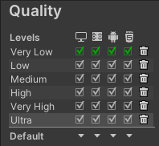

Dans Unity, il est possible d'exporter son jeu pour pouvoir y jouer sans ouvrir le projet dans Unity. On peut exporter le jeu pour différentes plateformes, PC, IOS, Android,...
Préparer l'exportation
Peu importe la plateforme sur laquelle on crée notre build, certaines étapes sont à respecter.
Premièrement, on doit choisir quelles scènes on souhaite exporter. Pour ce faire, on appuie sur file dans la barre de menu, puis Build Settings. En haut de la fenêtre qui s'ouvre, il y a un carré avec la mention Scenes in Build. Les scenes qui sont cochées dans cette case sont celles qui seront exportées. Par défaut, il y a une seule scène dans cette fenêtre. Nous devons ajouter celles que nous avons créées.
Dans la fenêtre project, cherchez la scène que vous souhaitez ajouter. Double cliquez ensuite sur celle-ci. Elle s'ouvrira dans la fenêtre Scene. Maintenant, revenez à la fenêtre build Settings et appuyez sur Add Open Scenes (À droite). Vous verrez alors le nom de la scène ouverte apparaître dans la liste. Vous pouvez changer l'ordre des scènes, les supprimer ou encore simplement décocher celles que vous ne souhaitez pas exporter.
Dans cette même fenêtre, vous verrez en bas à gauche pour quelle plateforme vous faites l'exportation. Si ce n'est pas la bonne qui est sélectionnée, je vous invite à allez voir les notes de cours sur les plateformes de développement.
Maintenant, nous allons vérifier la qualité de notre projet. Pour ce faire, vous pouvez appuyer sur Player Settings en bas à gauche de la fenêtre. Dans la fenêtre qui s'ouvre, appuyez sur Quality dans la liste à gauche. Vous verrez alors le graphique suivant:  Les crochets verts représentent le niveau de qualité qui est actuellement sélectionné. Vous pouvez changer ce niveau pour chaque plateforme. Pour ce faire, appuyez sur la flèche de la plateforme souhaitée dans la colonne Default et sélectionnez la qualité que vous désirez dans la liste. Vous pouvez supprimer des niveaux de qualité ou encore ajuster leurs paramètres, ils seront sauvegardés.
Dans la liste à gauche, appuyez maintenant sur Player. Dans le champ Company Name, inscrivez votre nom. Dans le champ Product name, le nom du travail que vous remettez. Vous pouvez mettre une image dans Default Icon pour changer le logo de votre application.
Maintenant, cliquez sur le menu Splash Image qui est sous Resolution. Ici, vous pouvez configurez l'aspect de Unity lorsqu'il charge votre jeu. Comme nous n'avons pas Unity Pro, le logo Made with Unity apparaîtra, mais on peut quand même faire certaines configurations. À tout moment, vous pouvez appuyer sur Preview pour voir le résultat des modifications que vous effectuez dans la fenêtre Game. Le paramètre Splash Style vous permet de choisir si le logo de Unity est pâle ou foncé. Animation vous permet de décider s'il est animé ou statique. Pour utiliser Draw Mode, vous devez ajouter un logo dans le carré Logos. Le draw Mode vous permettra de montrer votre logo et celui de Unity en même temps ou de les montrer l'un après l'autre.
Toujours dans Splash Image, vous avez aussi les options de Background. Par défaut, le fond est gris pâle ou gris foncé, vous pouvez modifier cette couleur avec Background Color. Sinon, vous pouvez mettre une image de fond dans l'option Background Image. Vous pouvez ensuite cocher ou non l'option Blur Background Image pour appliquer un petit flou sur le fond.
Exporter pour PC, MAC, Linux
Premièrement, nous allons ajuster la taille du jeu. Appuyez sur Edit, Project Settings, puis assurez vous d'être dans le menu Player. Dans le carré en bas, assurez-vous d'être sur l'onglet ordinateur. Ensuite, appuyez sur Resolution and Presentation pour ouvrir ce sous-menu.
Dans le paramètre Fullscreen Mode, vous pouvez choisir si votre jeu s'ouvre en plein écran ou dans une fenêtre d'une autre taille. Choisissez Fullscreen Window si vous voulez le plein écran, si vous choisissez plutôt Windowed, vous pouvez donner une résolution par défaut à votre jeu, par exemple, 1920 x 1080.
Dans les Standalone Player Options, vous pouvez cocher Resizable Window si vous voulez que le joueur puisse changer la taille de la fenêtre.
Maintenant, ouvrez la fenêtre Build Settings à partir du menu File. En bas à droite, dans Target Platform, choisissez Windows ou MAC, puis dans Architecture, vous pouvez décider entre 32 et 64 bit pour l'architecture de votre build.
Appuyez ensuite sur Build. Dans l'explorateur de fichiers, créez un nouveau dossier nommé Build. Sélectionnez ce dossier et appuyez sur sélectionner ce dossier. Maintenant, il faudra attendre que l'exportation se fasse. Une fois que c'est fait, une fenêtre s'ouvrira, vous pourrez appuyer sur le .exe pour ouvrir votre jeu et le tester.
Pour pouvoir jouer à votre jeu, le joueur aura besoin du .exe ainsi que du fichier _Data. On pourrait créer un installeur pour que tout se fasse avec un seul fichier, mais dans le cours on créera simplement un dossier .zip avec le build.
Exporter pour Android
Allez dans Edit, Project Settings, puis assurez vous d'être dans l'onglet Player. Dans le carré en bas, assurez-vous d'être dans l'onglet Android, puis allez dans Resolution and Presentation. Dans le paramètre Fullscreen Mode, vous pouvez choisir si votre jeu s'ouvre en plein écran ou dans une fenêtre d'une autre taille. Choisissez Fullscreen Window si vous voulez le plein écran, si vous choisissez plutôt Windowed, vous pouvez donner une résolution par défaut à votre jeu. Comme tous les appareils mobile ont des tailles différentes, ce n'est pas très courant.
Vous avez le paramètre Hide Navigation Bar que vous pouvez laisser cocher si vous ne voulez pas que le joueur ait accès à ses contrôles de téléphone pendant le chargement de votre jeu.
Dans Orientation, vous pouvez décider si vous laissez le joueur tourner son téléphone (autoRotate) ou si vous l'obligez à le mettre en portrait ou paysage. À noter qu'il est souvent plus simple de privilégié une orientation et de faire notre UI en fonction de celle-ci.
Dans Publishing Settings, un peu plus bas, vous pourriez créer une clé pour votre jeu. Cependant, je conseille de le faire uniquement si vous publiez sur un magasin. Sinon ce n'est pas nécessaire.
Dans Other Settings, plusieurs paramètres peuvent être modifiés au besoin. Dans Identification, vous pourrez donner un nom de paquet à votre jeu, vous pouvez cocher Override Default Package Name pour le modifier. Ce nom devrait toujours être écrit en trois parties, com.Company.Projet. La première partie com reste toujours ainsi. Compagny peut être remplacé par le nom de votre choix et projet aussi. Dans Version, vous pouvez choisir le numéro de votre version. Par exemple 1.0.
Miminum API Level et Target API level sont deux notions importantes. Avec Vuforia pour la réalité augmentée, vous aurez besoin d'avoir la version Android 8.0 au minimum, vous devez donc choisir cette version ou une version plus récente dans le Minimum API Level. Pour le target, je sélectionne toujour Highest Installed pour m'assurer que l'app soit compatible avec les téléphones les plus récents.
Fermer la fenêtre ouverte, puis allez dans File, Build Settings. Assurez-vous que les Scenes jeu et menu sont cochées dans Scenes in Build. Ensuite, appuyez sur Build ou build and run (si vous voulez l'app sur un appareil android connecté). Créez un dossier nommé build, ouvrez-le. Nommez votre appplication et appuyez sur enregistrer. Un .apk sera alors créé. C'est ce que vous devez remettre.
Notes de cours üìö